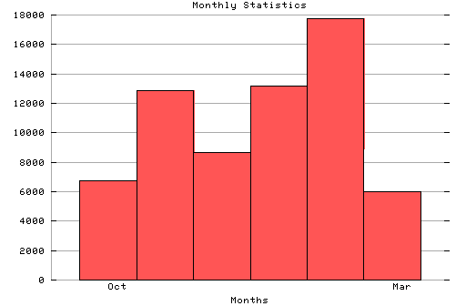

HTTP Server Monthly Statistics
Covers: 10/16/95 to 03/11/96 (148 days).
All dates are in local time.
Oct (10/16/95): 6733 : ####### Nov (11/01/95): 12869 : ############# Dec (12/01/95): 8668 : ######### Jan (01/01/96): 13154 : ############# Feb (02/01/96): 17737 : ################## Mar (03/01/96): 6017 : ######

Statistics generated at Mon Mar 11 02:59:19 MET 1996, (C) Schibsted Nett AS, 1995.